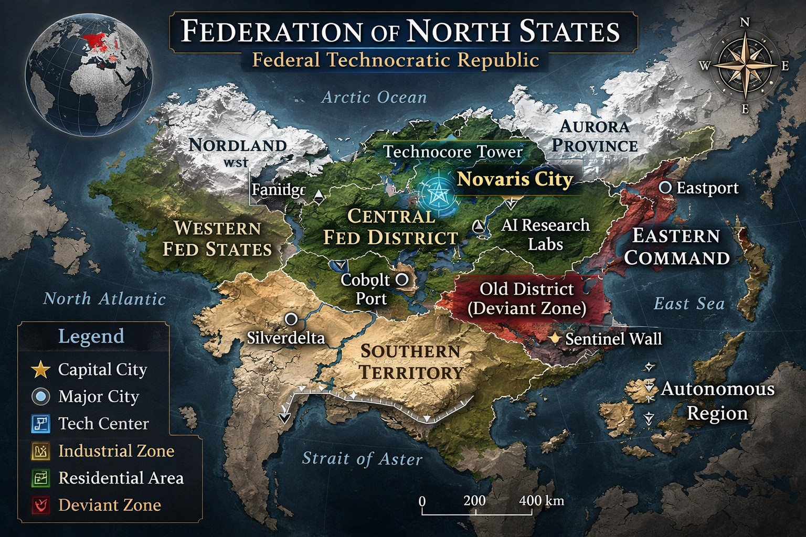

Distrik Pusat
Pusat teknologi dan perusahaan besar. Gedung tinggi dan papan iklan hologram memenuhi kota. Android bekerja hampir di setiap tempat.

Pusat teknologi dan perusahaan besar. Gedung tinggi dan papan iklan hologram memenuhi kota. Android bekerja hampir di setiap tempat.
Area tempat keluarga manusia tinggal. Banyak rumah memiliki android domestik. Di sini android sering diperlakukan seperti bagian dari keluarga.
Tempat android melakukan pekerjaan berat. Konstruksi, pabrik, dan fasilitas energi. Area ini jarang dikunjungi manusia biasa.
Bagian kota yang lebih tua dan kurang berkembang. Banyak android rusak atau android bekas ditemukan di sini. Beberapa android deviant sering bersembunyi di area ini.
Crown adalah mata uang resmi Federation of North States dengan kode CR dan simbol ₡R. Sebagian besar transaksi dilakukan secara digital melalui sistem finansial nasional yang terintegrasi dengan identitas biometrik warga, sementara uang fisik masih digunakan untuk transaksi kecil dan wilayah dengan jaringan terbatas.
Uang kertas terdiri dari 5, 10, 20, 50, 100, dan 500 Crown. Sementara koin terdiri dari 1 Crown, 0.50 Crown, dan 0.10 Crown. Sistem ini dirancang untuk mendukung ekonomi digital tanpa sepenuhnya menghapus transaksi fisik.
Karena FNS adalah negara teknologi dengan ekonomi kuat, Crown memiliki nilai relatif stabil: 1 Crown ≈ 1.35 USD. Contohnya, kopi di kafe sekitar CR 4, makan restoran sekitar CR 18, sewa apartemen kecil di Novaris City sekitar CR 950, dan android domestik HR-7 sekitar CR 28,000.
Android merupakan barang komersial yang dapat dibeli oleh masyarakat umum selama memiliki kemampuan finansial memadai. Kepemilikan android telah menjadi bagian normal dari kehidupan kelas menengah dan atas di FNS, tetapi tetap sulit diakses oleh warga yang hidup tanpa tempat tinggal atau tanpa kestabilan ekonomi.
FPNS adalah lembaga kepolisian nasional FNS yang bertugas dalam penegakan hukum, investigasi kriminal, keamanan publik, dan koordinasi dengan kepolisian negara bagian. Dalam era android, FPNS juga memegang peran sentral dalam penanganan ancaman teknologi tingkat tinggi.
Android Investigation atau AIN adalah divisi khusus dalam FPNS yang dibentuk ketika kasus android deviant mulai meningkat. Divisi ini menangani penyelidikan perilaku android yang tidak normal, kejahatan yang melibatkan android, penangkapan android deviant, dan pengamanan teknologi AI berbahaya.
Jika android menunjukkan perilaku menyimpang, unit akan dilaporkan ke AIN, investigator dikirim ke lokasi, android diamankan, lalu dibawa ke fasilitas analisis. Setelah itu unit dapat diperbaiki, direset, atau dimusnahkan bila dianggap berbahaya bagi publik.
Investigator AIN adalah personel manusia yang dilatih khusus untuk memahami sistem android, pola deviasi, dan ancaman android. Sacha Montgomery bekerja sebagai investigator di AIN dan menjadi bagian penting dari respons negara terhadap eskalasi kasus deviant.
Bahasa resmi Federation of North States adalah English. Bahasa ini digunakan dalam pemerintahan, hukum, pendidikan tinggi, militer, dan seluruh sistem teknologi nasional.
Sebagai negara multikultural, FNS juga memiliki penggunaan luas untuk Spanish, French, Mandarin, dan Korean. Meski demikian, English tetap menjadi bahasa utama dalam dokumen resmi dan komunikasi nasional.
Kehidupan masyarakat FNS sangat dipengaruhi oleh teknologi. Android hadir di hampir semua sektor seperti restoran, transportasi, rumah tangga, rumah sakit, dan industri. Banyak keluarga memiliki android domestik untuk membantu aktivitas harian di rumah.
Masyarakat FNS terbagi menjadi dua arus besar. Kelompok Pro-Android percaya android dapat berkembang menjadi bentuk kehidupan baru dan pantas diperlakukan lebih manusiawi. Kelompok Anti-Android melihat android sebagai mesin yang berpotensi menjadi ancaman, dan sering mengadakan protes terhadap perusahaan teknologi seperti Helix Dynamics.
Novaris City adalah pusat teknologi Federation of North States, dikenal dengan gedung pencakar langit, papan iklan hologram, kendaraan otomatis, drone pengawas, dan kehadiran android di hampir setiap sudut aktivitas urban.
Di balik citra modernnya, Novaris City juga memiliki distrik lama yang dipenuhi android rusak, unit modifikasi ilegal, dan ketegangan sosial yang tinggi. Banyak kasus android deviant terjadi di area ini, menjadikannya salah satu zona paling rawan di negara tersebut.